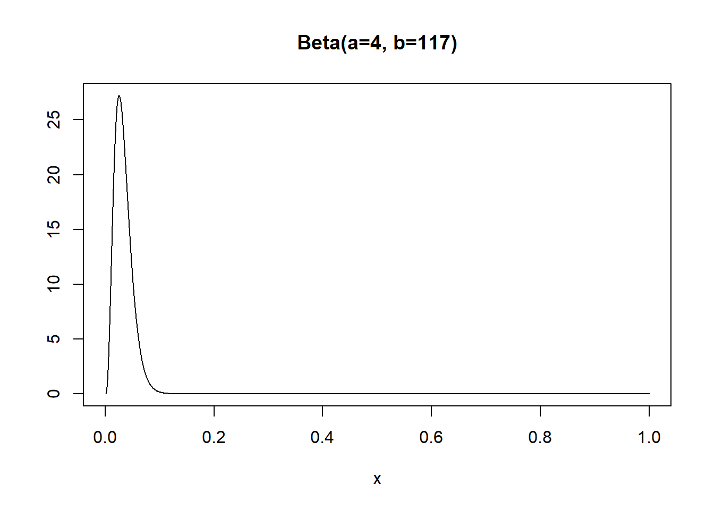
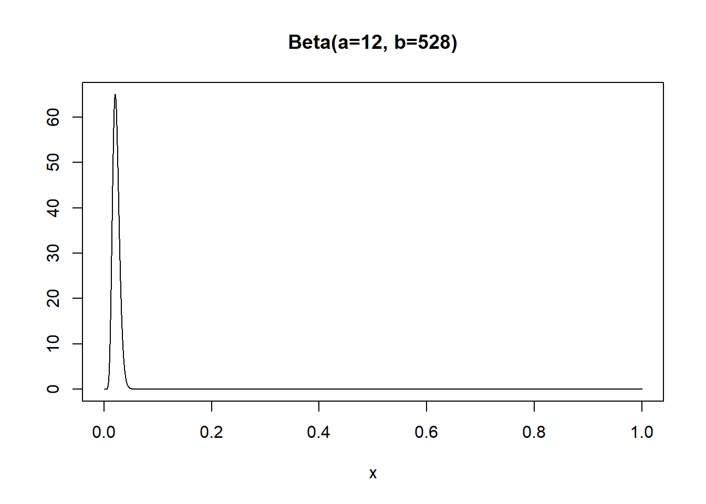

5.1 Bayesian statistical inference
2020-03-03
5.1.1 Representing a Beta(a,b) distribution:
# define the function
pl.beta <- function(a,b, asp = if(isLim) 1, ylim = if(isLim) c(0,1.1)) {
if(isLim <- a == 0 || b == 0 || a == Inf || b == Inf) {
eps <- 1e-10
x <- c(0, eps, (1:7)/16, 1/2+c(-eps,0,eps), (9:15)/16, 1-eps, 1)
} else {
x <- seq(0, 1, length = 1025)
}
Mean_dbeta<-round(a/(a+b), digits=4)
Variance_dbeta<-round((a*b)/((a+b)^2*(a+b+1)), digits=4)
Mode_dbeta<-round((a-1)/(a+b-2), digits=4)
P_50_0_percent_0<-qbeta(0.5, a, b)
P_50_0_percent<-round(P_50_0_percent_0, digits=4)
P_2_5_percent_0<-qbeta(0.025, a, b)
P_2_5_percent<-round(P_2_5_percent_0, digits=4)
P_97_5_percent_0<-qbeta(0.975, a, b)
P_97_5_percent<-round(P_97_5_percent_0, digits=4)
fx <- cbind(dbeta(x, a,b))
f <- fx; f[fx == Inf] <- 1e100
matplot(x, f, ylab="", type="l", ylim=ylim, asp=asp,
main = paste0 (sprintf("Beta(a=%g, b=%g)", a,b)))
print(paste0 ("Distribution: ", sprintf("Beta(a=%g, b=%g)", a,b)))
print(paste0 ("Mean=", Mean_dbeta, "; Variance=", Variance_dbeta,"; Median=", P_50_0_percent, "; Mode=", Mode_dbeta))
print(paste0 ("Perc(2.5%)=", P_2_5_percent, "; Perc(97.5%)=", P_97_5_percent))
}5.1.1.1 Exercise
You are performing a study to estimate the Case Fatality Rate of the new Corona Virus in a rural community in China. You observed that among the 119 people formally diagnosed with the disease, three have died and 116 have recovered. The case Fatality Rate is an estimate of the probability of dying among those affected by a disease and the proportion of deaths among affected subjects is used to estimate it.
- Use the Bayesian statistical inference approach to estimate the Case Fatality Rate for this community. Assuming an uninformative prior calculate the likelihood and the posterior distribution for the parameter of interest.
Likelihood x Prior = Posterior
\(Bin(x,n)\) x \(Beta(a,b)\) = \(Beta(x+a,n-x+b)\)
\(Bin(3,119)\) x \(Beta(1,1)\) = \(Beta(4,117)\)
- Use the R software to draw the density of the posterior distribution and to calculate its mean, median, mode and the 95% credible interval for the parameter of interest.

## [1] "Distribution: Beta(a=4, b=117)"
## [1] "Mean=0.0331; Variance=0.0003; Median=0.0305; Mode=0.0252"
## [1] "Perc(2.5%)=0.0092; Perc(97.5%)=0.0713"- Based on the available evidence regarding the parameter of interest, what is the probability of the Case Fatality Rate of the new Corona Virus being higher than 5%? And being higher than 10%?
Use the following R functions that allow calculating densities, probabilities and percentiles associated with Beta distributions:
Functions to work with Beta distributions
dbeta(x, a, b) Gives you the density at x of the distribution function Beta(a,b)
pbeta(x, a, b) Gives you the probability of observing a value lower than or equal to x (P[X =< x]) for the distribution function Beta(a,b)
pbeta(x, a, b, lower.tail=FALSE) Gives you the probability of observing a value larger than x (P[X > x]) for the distribution function Beta(a,b)
qbeta(x, a, b) Gives you the percentile x of the distribution function Beta(a,b)
rbeta(n, a, b) Gives you n randomly chosen observations from the distribution function Beta(a,b)
P[X > 0.05] = 0.14441
P[X > 0.1] = 0.00157
- Some days later, you perform an identical study in neighbouring community. In this community, you observed that among the 419 people formally diagnosed with the disease, eight have died and 411 have recovered. Using a Bayesian inference approach, estimate the Case Fatality Rate of the new Corona Virus taking into account the available data for this community and the previous knowledge regarding the parameter of interest. Calculate the new likelihood and the new posterior distribution for the parameter of interest.
\(Bin(x,n)\) x \(Beta(a,b)\) = \(Beta(x+a,n-x+b)\)
\(Bin(8,419)\) x \(Beta(4,117)\) = \(Beta(12, 528)\)
- Use the R software to draw the density of the new posterior distribution and to calculate its mean, median, mode and the 95% credible interval for the parameter of interest. Use the R function previously presented.

## [1] "Distribution: Beta(a=12, b=528)"
## [1] "Mean=0.0222; Variance=0; Median=0.0216; Mode=0.0204"
## [1] "Perc(2.5%)=0.0116; Perc(97.5%)=0.0362"- Based on all the available evidence regarding the parameter of interest after performing this second study, what is the probability of the Case Fatality Rate of the new Corona Virus being higher than 5%? And being higher than 10%? Use the R functions previously presented.
p5.b <- pbeta(0.05, 12, 528, lower.tail=FALSE)
p10.b <- pbeta(0.1, 12, 528, lower.tail=FALSE)
options(scipen=999)P[X > 0.05] = 0.00034
P[X > 0.1] = 0
- Consider an alternative situation where you use all the observations of the first and second studies as if they were obtained in a single study. Assuming an uninformative prior calculate, in this case, the likelihood and the posterior distribution for the parameter of interest. Use the R software to draw the density of the posterior distribution and to calculate its mean, median, mode and the 95% credible interval for the parameter of interest. Use the R functions previously presented.
\(Bin(x,n)\) x \(Beta(a,b)\) = \(Beta(x+a,n-x+b)\)
\(Bin(3+8,119+419)\) x \(Beta(1,1)\) = \(Beta(12, 528)\)

## [1] "Distribution: Beta(a=12, b=528)"
## [1] "Mean=0.0222; Variance=0; Median=0.0216; Mode=0.0204"
## [1] "Perc(2.5%)=0.0116; Perc(97.5%)=0.0362"